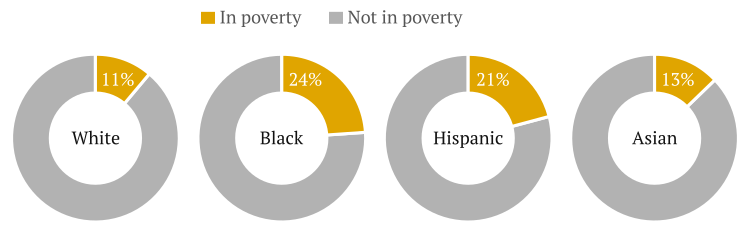

Standard header area
[OPENING TEXT]
The millennial generation, over 75 million strong is America’s largest—eclipsing the current size of the postwar baby boom generation. Millennials make up nearly a quarter of the total U.S. population, 30 percent of the voting age population, and almost two-fifths of the working age population.
This report examines the demographic makeup of millennials for the nation, the 100 largest metropolitan areas, and all 50 states. With an emphasis on its unique racial diversity, this report:
This report draws from a variety of U.S. Census Bureau data, including the Current Population Survey, the American Community Survey, census estimates and projections, as well as historical decennial censuses. It also presents metropolitan area projections conducted by the author.
What makes the millenials unique?
[Sequence of static graphics]
[Definitions of the generational cohorts]
Millennials are defined in this report as persons born between 1981 and 1997.
TIMELINE GRAPHIC
[Size of the generations]
In 1980, the Baby Boomers were "young adults" (ages 16 to 34). Generation X was at a similar age in 2000 (20 to 34). And in 2015, Millenials ranged in age from 18 to 34.
As young adults, the Boomers made up 33 percent of the total population and vastly outweighed generations that were their seniors. Millennials, while currently the largest share of the population, now represent 23 percent of the population. As such, they lack the [outsized influence of the boomers in their earlier years.]
Millennials grew nationally by 4.7% from 2010-15, representing gains from immigration and the aging of younger millennials into the 18-34 age bracket during that time.
RELATIVE SIZES OF THE GENERATIONS
[Racial/ethnic diversity]
Millennials are by far the most diverse generation compared to prior generations.
Most white baby boomers were born in an era when immigration was at a historic low point and when the immigrants who did arrive in America were mostly white Europeans. Then, the nation’s much smaller minority population was composed mostly of black Americans, residing in highly segregated cities.
RACE/ETHNICITY BREAKDOWN
Consider a graphic that more clearly depicts the differences.
[Other important distinctions]
Compared to baby boomers and Gen Xers at the same relative time in young adult life, millennials: have attained higher levels of education, are marrying at lower rates, are owning homes at lower rates, are more likely to be in poverty, and are less likely to be employed.
SMALL GRAPHICS -- CLUSTERED BAR CHARTS DEPICTING DISCREPANCIES BETWEEN GENERATIONS
Where do Millenials Live?
Really, where are millenials concentrated, then, how do the demographics of millenials vary by place. [TOGGLE B/N STATE AND METRO MAP]
Why does this matter?
Millenials are a bridge to the nation’s more diverse future
Millennials are the most racially and ethnically diverse generation to pass through young adult ages and will be followed by an even more diverse generation. Thus, millennials are the demographic “bridge” to the nation’s diverse future, ushering in a very different America from the one in which today’s older generations grew up.
By the mid-2040s, racial and ethnic minorities are projected to make up over half of all Americans, but the 2020 census will show that the postmillennial generation — people who are younger than millennials — will already be minority white. This means that millennials, now 44 percent minority, will pave the way for the generations behind them as workers, consumers, and leaders in business and government in their acceptance by and participation in tomorrow’s more racially diverse America.
Static graphic depicting cultural generation gap now versus 2035.
Millennials are already making an indelible imprint on the nation as evident from the tremendous publicity they receive and the consumer base they represent. Yet their most lasting legacy is yet to be determined, based partly on how successfully they serve as a social, economic, and political bridge to chronologically successive racially diverse generations.
Despite coming of age in the midst of the Great Recession and the subsequent housing market crash, the racially and ethnically diverse millennial generation tends to be optimistic about the future. Amidst signs that the employment situation is improving, and indications that housing affordability is reviving, a majority of millennials say that they want to get married, have children, and purchase a home. Specifically, Hispanic, Asian, and black millennials are more likely than whites to say that they will do better financially than their parents and that the life of their generation will be better than that of their parents.
By example and as advocates, millennials of all racial and ethnic backgrounds can make the case that investing in a more inclusive America is essential to the nation’s economic success and will, as well, benefit older populations. As they move into middle age, millennials will represent the new face of America in business, in politics, in popular culture, and as the nation’s image to the rest of the world.